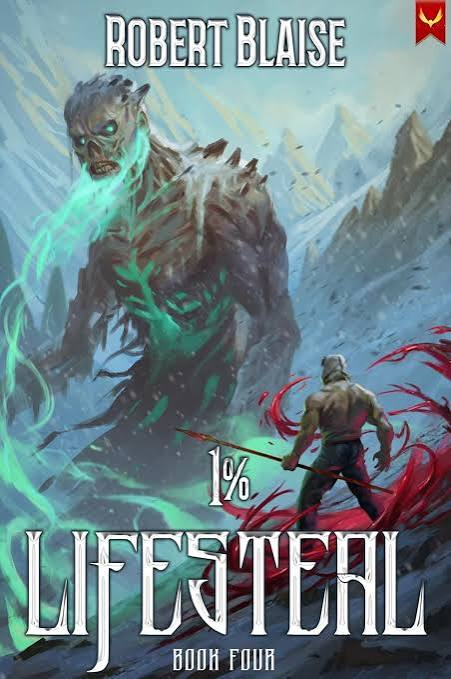

1% Lifesteal: Weak Ability, Brutal Growth

Robert Blaise's 1% Lifesteal is set 200 years after some reality-breaking apocalypse, in a brutal, stratified society where Freddy Stern — a twice-orphaned worker just trying to survive — is about the last person you'd expect to turn into a threat to anything.
The ability that gives it its name
After a near-death experience, Freddy wakes up with the 1% Lifesteal talent — sounds weak as hell on paper, but it lets him grow stronger and literally piece his own ass back together every time he kills something. It's a slow-burn, weak-to-strong brawler build, and the series doesn't shy away from the ugly side of that: the stronger Freddy gets, the more he's forced to question what the hell he's turning into.
Why it works
What sold me was how uncomfortable the power fantasy gets. Most progression fantasy treats getting stronger as an unambiguous good — this one keeps poking at what it actually costs. Combined with a genuinely bleak-as-hell post-apocalyptic setting, it stands out from the usual isekai-flavored LitRPG crowd. Solid 8/10 — recommended if you want your power growth with a little moral weight attached to it.